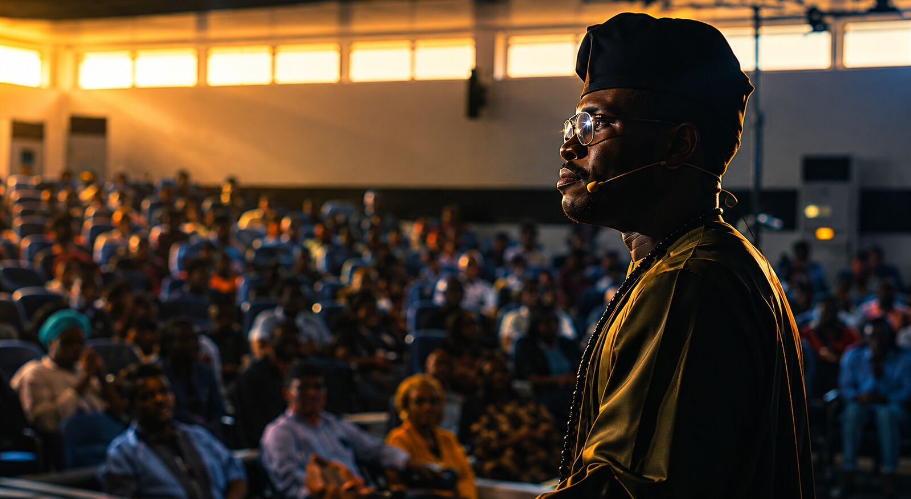

Why Abuja Is the Right Stage for Africa's Next Chapter
On choosing a capital city built for the future, not just the present.

When people picture where an idea gets its global debut, they rarely picture Abuja. That is exactly why we chose it.
Project TEDxAfrica was never built to replicate what already exists elsewhere. It was built on a simple conviction: the most important ideas about Africa's future should be shared from within Africa, in a city actively shaping that future in real time. Abuja, as Nigeria's planned capital and a growing hub of policy, diplomacy, and enterprise, gives our speakers a stage with genuine stakes attached to it.
This is not a backdrop for a photo opportunity. It is a working city where the conversations that happen after a talk ends can matter just as much as the sixteen minutes on stage. A speaker sharing an idea on governance, technology, or climate resilience in Abuja is speaking into a room where those exact questions are being negotiated daily, by people who can act on them.
"A remarkable idea can open a door. The right platform can open a lifetime of opportunity."
For the speakers joining us in September 2026, that means the five days surrounding the main event are treated with the same seriousness as the talk itself. Executive engagements, cultural immersion, and curated introductions are designed so that the relationships formed in Abuja outlast the applause.
This is the thinking behind everything we build: a TEDx talk is where the journey begins, not where it ends.